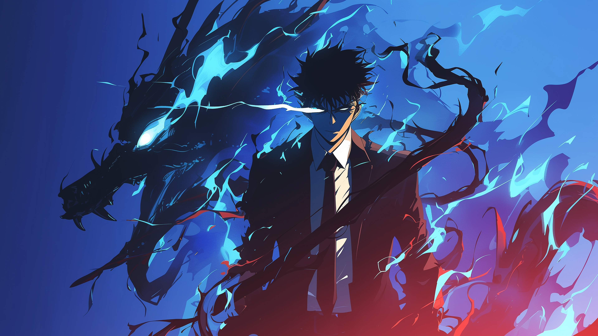
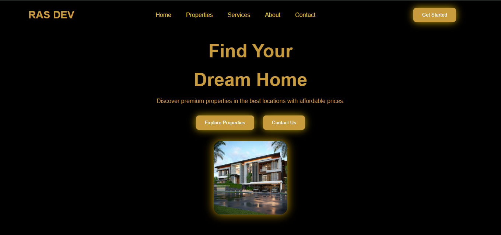

HTML
Mulai belajar struktur dasar website dan memahami cara kerja tag serta element.

A simple portfolio where I share my projects, skills, and web development journey.
Feel free to explore! 🚀
Halo, nama saya Rasyudo saya umur 13 tahun
Kelas 1 SMP ini website pertama saya buat portofolio
saya udah jadi programer selama 2 bulan
Saya masih terus belajar dan mengembangkan kemampuan saya di bidang web development.
Saat ini saya sedang mempelajari HTML, CSS, JavaScript, dan Python.
Saya suka mencoba hal baru dan mengubah ide sederhana menjadi sebuah project.
Setiap project yang saya buat jadi kesempatan buat saya belajar sesuatu yang baru.
Jika tertarik dengan website bikinan saya bisa hubungi saya dengan tekan contact me
Perjalanan saya dalam belajar dan mengembangkan skill di dunia programming.
Mulai belajar struktur dasar website dan memahami cara kerja tag serta element.
Belajar styling, layout, warna, dan responsive design.
Membuat website lebih interaktif dengan DOM, event, dan animasi sederhana.
Sedang mempelajari logika pemrograman dan dasar backend.
Projects

View ProjectWebsite project yang saya buat untuk menampilkan karya dan kemampuan web development saya.
💻 HTML & CSS
🎨 Custom Design
📱 Responsive Website
🚀 Project By Rasyudo
💻Website Development💻>Saya membuat website sederhana dan modern menggunakan HTML, CSS, dan JavaScript.
🎨Custom Design🎨>Saya membuat tampilan website sesuai dengan konsep dan kebutuhan yang diinginkan.
📱Responsive Website Saya📱>membuat website yang dapat menyesuaikan tampilannya di berbagai ukuran layar, seperti komputer dan HP.
📜Portfolio Website📜>Saya membuat website portfolio untuk menampilkan profil, project, dan kemampuan yang dimiliki.
🛠️Website Improvement🛠️>Saya membantu mengembangkan dan memperbaiki tampilan website agar menjadi lebih menarik dan nyaman digunakan.
Beberapa pertanyaan yang sering ditanyakan.
Ya, website dibuat agar dapat menyesuaikan tampilan di komputer, tablet, dan HP.
Waktu pengerjaan tergantung dari tingkat kesulitan dan jumlah fitur yang dibutuhkan,bisa sekitar 2-7 hari sesuai tingkat kesulitan
Ya, desain dapat disesuaikan dengan konsep dan kebutuhan website.
Silakan gunakan tombol Contact Me untuk menghubungi saya melalui WhatsApp.
Anda tertarik dengan web saya silahkan tekan Contact Me di bawah ini
Terima kasih sudah menggunakan jasa kami